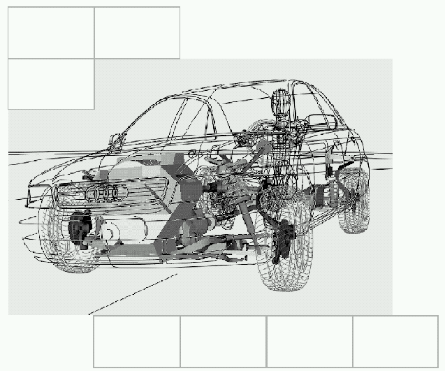

[redacted-co]
D[redacted]
Telefon: [redacted-phone]
[redacted-co]
[redacted-person]

[redacted-person] Fahrzeugsicherheit
LAH.85D.880.B
[redacted-prj]/2_Cx_BL, [redacted-prj]/3_Cx_BL
Check - UPDATE KW49/2024 ER-4 Fachbereiche für E-Freigabe:
Front ([redacted]) i.O.
Seite i.O. ([redacted])
FGS i.O. - [redacted]
Sensorik i.[redacted-person] Änderung ([redacted])
Si-Elektronik inkl. AB-SG -> [redacted-person] ER-43 i.O. [redacted-phone]
C-FPV [redacted-person] i.O.? -> [redacted-phone]
SYS TL i.O. ! [redacted-person] ([redacted-person].5 erfolgt)
[redacted-person] : BTV i.O.
Gurte i.O. / Airbags i.O.
[redacted-person] i.O. -> relev. Funktionsvar. ergänzt! -> i.O. [redacted-phone]
-> Update siehe blaue Markierungen
Freigabe:
Verteiler:
| [redacted-person] Sicherheitssystem | [redacted-person] |
| [redacted-person] passive Sicherheitsfunktionen, Gesamtfzg.Crash | [redacted-person] |
| [redacted-person] Partnerschutz/Unfallerkennung | [redacted-person] |
| [redacted]Heck | [redacted-person] |
| [redacted-person] Airbags | [redacted-person] |
| [redacted-person] Sicherheitselektronik | [redacted-person] |
| [redacted-person] Gurtsysteme | [redacted-person] |
Inhaltsverzeichnis
2 [redacted-person] und Randbedingungen 7
2.3 Begriffe und Abkürzungen 7
Gesetze, Selbstverpflichtung, [redacted-person] und interne Anforderungen 9
3.2.3 Seitenaufprall interne Anforderungen für alle Märkte 13
3.5.1 [redacted-person] Gesetz 15
3.5.2 [redacted-person] Consumer 15
4 [redacted-person]/Komponenten 17
4.1 [redacted-person] Fahrzeug / Komponenten 17
4.3 System- und Bauteil-[redacted-person] Fahrzeug 17
5.2 [redacted-person] Innenraum 18
5.3 System- und Bauteil-[redacted-person] 19
7 Kraftstoff / Elektrik / Betriebsstoffe / HV 22
Änderungsdokumentation
Vorwort
Das vorliegende Lastenheft beschreibt Leistungen, Anforderungen sowie Prüf- und Erprobungsbedingungen der Fahrzeugsicherheit, die das Produkt erfüllen muss.
Zusätzlich zu diesem Lastenheft gelten die Entwicklungsbedingungen der Norm [redacted-co]99000.
Inhalte dieses Lastenheftes dürfen Dritten ohne ausdrückliche Genehmigung durch die [redacted-co] nicht zugänglich gemacht werden.
[redacted-person] und Randbedingungen
[redacted-person] und die relevanten Termine sind im projektspezifischen Projektplan/Dach-Lastenheft LAH.85D.800.A dokumentiert.
Erfüllung der Projektziele mit den Technikinhalten nach der gültigen technischen Produktbeschreibung (Bsp. Motorisierungen).
[redacted-person] siehe [redacted-co]99000
| Abkürzung | Bedeutung |
|---|---|
| A | |
| B | |
| B | Bestätigung durch Berechnung |
| BFS | Beifahrerseite |
| BT | Bauteil |
| C | |
| C | Bestätigung durch Crashversuch |
| COP | [redacted-person] Part |
| C-NCAP | [redacted]Program |
| C-IASI | [redacted]Index |
| D | |
| DIN | [redacted]eV |
| DUM | [redacted-person], projektübergreifend |
| E | |
| ECE | [redacted-person] for Europe |
| EG | [redacted-person] |
| EOP | End of Production |
| F | |
| FS | Fahrerseite |
| H | |
| hi | hintere Sitzreihe |
| HIII | Hybrid III |
| I | |
| ISO | [redacted] |
| K | |
| L | |
| LAH | Lastenheft |
| LL | Linkslenker |
| M | |
| mdb | [redacted-person] Barrier |
| mpdb | [redacted] |
| N | |
| R | |
| RdW | Rest der Welt |
| RL | Rechtslenker |
| S | Bestätigung durch Schlittenversuch |
| SAE | Society of [redacted-person] |
| SC | [redacted-person] |
| SER | Serienübernahmeteile |
| T | |
| TPB | [redacted-person] Beschreibung |
| V | |
| vo | vordere Sitzreihe |
| V | Bestätigung durch sonstigen Versuch |
| VW… | [redacted-person] |
| W | |
| WS | WorldSID |
Gesamtfahrzeug:
Gesetze, Selbstverpflichtung, [redacted-person] und interne Anforderungen
| Ä | Umfang | Inhalt | Quelle | Verant- wortlich |
|---|---|---|---|---|
Prämissen und Rand- bedingungen |
|
| Ä | Umfang | Inhalt | Quelle | Verantwortlich |
|---|---|---|---|---|
Prämissen und Randbedingungen EDL/Generalentwickler |
[redacted-person] und Randbedingungen zur gebündelten Gewerkvergabe und GE-Vergabe sind im separaten Vergabe-LAH der Fahrzeugsicherheit zusammengefasst. | LAH.85D.880.D | Hr.Dohmen |
Es sind die zutreffenden Gesetzesanforderungen verbindlich.
Neben den beschriebenen Fahrzeuganforderungen sind auch die der Lastenhefte aus den Abschnitten 3 bis 10 zu berücksichtigen bzw. zu erfüllen.
[redacted-person] ist die Erfüllung für alle relevanten Varianten (Antrieb, Türen,
etc.) nachzuweisen.
Die folgenden Tabellen beziehen sich auf die Gesamtfahrzeuganforderungen.
[redacted-person] sind in den jeweiligen Funktions- und
Bauteillastenheften definiert.
In diesem Kapitel sind die für das Fahrzeugprojekt relevanten Lastfälle für den Frontaufprall dokumentiert. Die detaillierten Anforderungen für die einzelnen Lastfälle sind in den nachfolgenden Lastenheften beschrieben. Die in den Lastenheften beschriebenen Anforderungen sind für alle Lastfälle gültig.
Bei den Gesetzeslastfällen ist eine „sichere Erfüllung“ der Gesetze zu gewährleisten.
Die genauen Ziele der Consumer-Lastfälle sind in Anlage 5 zu diesem Lastenheft beschrieben.
LAH.DUM.880.KG V3 Anlage 2 [redacted-person] China
LAH.85D.880.C Anlage 5 [redacted-person]
LAH.DUM.880.AS Hybrid- und Elektrofahrzeuge (Update läuft im Konzern!)
LAH.DUM.857.DG [redacted-person] und [redacted-person]
LAH.[redacted-phone]Kraftstoff, Elektrik und Betriebsstoffe
LAH.DUM.880.KJ [redacted]
LAH.DUM.880.KH [redacted-person] China
| Versuchsart | Relev. Funktions-Varianten | Winkel | Geschwindigkeit | Dummy |
Frontaufprall GB[redacted-phone] dynamische Bereichsermittlung |
n.a. | -18° / 0° / +18° | ECE-R16 Puls (48,3 km/h) |
5% / 50% / 95% auf allen Sitzplätzen |
Frontalaufprall, GB[redacted-phone], Lenkanlage |
n.a. | 0º | 48,3 – 53,1 km/h | |
Frontalaufprall, GB[redacted-phone], Insassenschutz, Kraftstoffanlage |
FV 1742983, FV 1576648 |
0º | 50 km/h | 2 x 50% HIII vo |
GB/T 31498 [redacted-person] für elektrifizierte Fahrzeuge (in Verbindung mit GB [redacted-phone]) |
FV 1742983, FV 1577745 |
0° | 50 km/h | 2 x 50% HIII vo |
Frontalaufprall, GB[redacted-phone], 40% ODB Insassenschutz, Kraftstoffanlage |
FV 1742983, FV 1576648 |
0º | 56 km/h | 2 x 50% HIII vo |
| Versuchsart | Relev. Funktions-Varianten | Winkel | Geschwindigkeit | Dummy |
| [redacted-person] NCAP, mPDB | FV 1742983, FV 1576648 |
0º | 50 km/h | THOR 50%FS 5% HIII BFS 5% HIII hi FS Q10 hi BFS |
| [redacted-person] NCAP, Wand | FV 1742983, FV 1576648 |
0° | 56 km/h | 2x 50% HIII vo 5% HIII hi Q3 hi |
| Frontalaufprall C-IASI MPDB links | FV 1742983, FV 1576648 |
0° | 50 km/h | THOR 50% FS 50% HIII BFS Q6 hi FS Q10 hi BFS |
| Frontalaufprall C-IASI small overlap links | FV 1742983, FV 1576648 |
0° | 64 km/h | 50% HIII FS 5% HIII hi FS |
| Frontalaufprall C-IASI small overlap rechts | FV 1742983, FV 1576648 |
0° | 64 km/h | 50% HIII FS 50% HIII BFS 5% HIII hi FS |
| Kneemapping (China-NCAP) | n.a. | 0° | 56 km/h | 5%/50%/95% HIII |
| Kneemapping (CIASI) | n.a. | 0° | [redacted-person] | 5%/50%/95% HIII |
| [redacted] | n.a. | 0° | [redacted-person] | T3 |
| Versuchsart | Relev. Funktions-Varianten | Winkel | Geschwindigkeit | Dummy | Entwicklungsziel |
| Frontalaufprall, 40% ODB li | FV 1742983 | 0° | 56 km/h | 2 x 95% HIII vo | Anlage 5: LAH.85D.880.C Anlage 2: LAH.DUM.880.KG V3 (Sensorik, elektrische Sicherheit, Insassenwerte RdW < 80%) wird für jede Antriebsvariante gefahren |
| Frontalaufprall, 40% ODB li | FV 1742983 | 0° | 56 km/h | 2 x 5% HIII vo | |
| Frontalaufprall | FV 1742983 | 0° | 50 km/h | 2 x 95% HIII vo | |
| Frontalaufprall | FV 1742983 | 0° | 50 km/h | 2 x 5% HIII vo | |
Frontalaufprall ODB links und rechts Struktur worst case |
FV 1742983 | 0º | 64 km/h | 2 x 50% HIII vo | Anlage 5: LAH.85D.880.C Anlage 2: LAH.DUM.880.KG V3 Strukturintegrität, elektrische Sicherheit, [redacted-person] + kein Bottoming out nach Euro NCAP- Definition Konfiguration wird von [redacted-person] definiert, schwerste Fzg. mit größtem Blockbildner |
| [redacted-person] Overlap links | FV 1742983 | 0° | 64 km/h | 50% HIII Fahrer | Anlage 2: LAH.DUM.880.KG V3 Anlage 5: LAH.85D.880.C |
| [redacted-person] Overlap rechts | FV 1742983 | 0° | 64 km/h | 50% HIII Fahrer 50% HIII Beifahrer |
Anlage 2: LAH.DUM.880.KG V3 Anlage 5: LAH.85D.880.C |
| Frontalaufprall | FV 1742983 | -30° +30° |
32 km/h | 2 x 5% HIII vo | [redacted-person], elektr. Sicherheit, Sensorik |
| Frontalaufprall | FV 1742983 | 0° | 27km/h | 2 x 5% HIII vo | [redacted-person], elektr. Sicherheit, Sensorik |
| Frontalaufprall ODB links oder rechts | FV 1742983 | 0º | 40 km/h | 2 x 5% HIII vo | |
| [redacted-person] 10“ mittig | FV 1742983 | 0° | 35 km/h | 2 x 5% HIII vo | |
| LKW-Unterfahrer | FV 1742983 | 0° | 30 km/h | 2 x 5% HIII vo | |
| Leitplanke (Multikollisionsbremse) | FV 4126142 | 15° | 80 km/h |
In diesem Kapitel sind die für das Fahrzeugprojekt relevanten Lastfälle für den Seitenaufprall dokumentiert. Die detaillierten Anforderungen für die einzelnen Lastfälle sind in den nachfolgenden Lastenheften beschrieben. Die in den Lastenheften beschriebenen Anforderungen sind für alle Lastfälle gültig.
Bei den Gesetzeslastfällen ist eine „sichere Erfüllung“ der Gesetze zu gewährleisten.
Die genauen Ziele der Consumerlastfälle sind in Anlage 5 zu diesem Lastenheft beschrieben.
LAH.85D.880.E v20241106 Anlage 3 [redacted-person]
LAH.85D.880.M v20241106 Anlage 4 [redacted-person]
LAH.85D.880.C Anlage 5 [redacted-person]
LAH.[redacted-phone]Kraftstoff, Elektrik und Betriebsstoffe
LAH.DUM.880.AS Hybrid- und Elektrofahrzeuge
LAH.DUM.959.E Crashreaktionen
| Versuchsart | Relev. Funktions-Varianten | Winkel | Geschwindigkeit | Dummy |
[redacted-person] GB [redacted-phone], Insassenschutz (vgl. ECE-R95 [redacted-person]. 2) |
FV 1742983, FV 1576648 |
90º | 50 km/h | 50% ES2 vo FS |
GB/T 31498 [redacted-person] für elektrifizierte Fahrzeuge (in Verbindung mit GB [redacted-phone]) |
FV 1742983, FV 1577745 |
90° | 50 km/h | 50% ES2 vo FS |
| GB/T [redacted-phone]Pfahlaufprall | FV 1742983, FV 1576648 |
75° | 32km/h | 50% ES2 vo FS oder 50% WS vo FS |
| Versuchsart | Relev. Funktions-Varianten | Winkel | Geschwindigkeit | Dummy |
China NCAP 2024 SC-MDB (1700kg; 350mm Bodenhöhe) |
FV 1742983, FV 1576648 |
90º | 60 km/h | 50% WS vo FS 5% SID-IIs hi FS |
China NCAP 2024 Pfahl inkl. Occupant to Occupant |
FV 1742983, | 75° | 32 km/h | 50% WS vo FS 50% WS vo BFS Q3 hi FS |
China NCAP 2024 [redacted-person] FarSide |
FV 1742983, | 75° | 32 km/h | 50% WS und 5% SID-IIs |
C-IASI v3.0 AC-MDB (1650kg; 400mm Bodenhöhe) |
FV 1742983, | 90° | 50 km/h | SID-IIs vo FS 50% WS vo BFS (Monitoring) SID-IIs hi FS |
| Versuchsart | Relev. Funktions-Varianten | Winkel | Geschwindigkeit | Dummy |
| [redacted-person] hinten 2. SR | FV 1742983, | 90º | 29 km/h | 1 x 5% SID-IIs 1 x 50% ES2 (simulativ) |
In diesem Kapitel sind die für das Fahrzeugprojekt relevanten Lastfälle für den Heckaufprall dokumentiert. Die detaillierten Anforderungen für die einzelnen Lastfälle sind in den nachfolgenden Lastenheften beschrieben. Die in den Lastenheften beschriebenen Anforderungen sind für alle Lastfälle gültig.
Bei den Gesetzeslastfällen ist eine „sichere Erfüllung“ der Gesetze zu gewährleisten.
Die genauen Ziele der Consumerlastfälle sind in Anlage 5 zu diesem Lastenheft beschrieben.
LAH.[redacted-phone]D [redacted-person]
LAH.[redacted-phone]Kraftstoff, Elektrik und Betriebsstoffe
LAH.DUM.880.AS Hybrid- und Elektrofahrzeuge (Update läuft im Konzern!)
| Versuchsart | Relev. Funktions-Varianten | Winkel | Geschwindigkeit | Dummy |
| Heckaufprall GB [redacted-phone], Kraftstoffanlage | FV 1742983 | 180º | 50 +2 km/h | - |
| Versuchsart | Winkel | Geschwindigkeit | Dummy |
Heckaufprall wie TRIAS 15-J[redacted-phone] bzw. FMVSS 301 alt Konventionelle und elektrische Antriebe |
180º | 50 +2 km/h | - |
Heckaufprall [redacted-co] intern 80km/h_ODB_0°_70%_1368kg |
0° | 80km/h | - |
[redacted-person] zu den Anforderungen des Fußgängerschutzes sind im
Funktionslastenheft LAH.85D.880.G beschrieben.
| Versuchsart | Winkel | Geschwindigkeit | Dummy | Entwicklungsziel |
Türeindrückung, statisch GB [redacted-phone] |
- | - | - | [redacted-person] LAH.DUM.880.KR Version 20210108 |
Sicherheitsgurtverankerung GB [redacted-phone] GB [redacted-phone] |
- | - | - | Wird abgedeckt durch ECE-R 14, R16, R145 |
Dacheindrückung, statisch GB [redacted-phone] (gültig ab [redacted-phone]) |
- | - | - | [redacted-person] LAH.DUM.857.DH Version 20221129 |
| Versuchsart | Winkel | Geschwindigkeit | Dummy | Entwicklungsziel |
Dacheindrückung, statisch C-IASI v.3.0 [redacted-person] |
- | - | - | [redacted-person] LAH.DUM.857.DH Version 20221129 |
| Ä | Umfang | Inhalt | Quelle | Verantwortlich |
|---|---|---|---|---|
Prüfvorschriften, Liefervorschriften, Verfahrens- anweisung |
Prüf- und Freigabeprogramm für Crash-, Schlitten- ,Komponenten- und OoP-Versuche | |||
Übergeordnet [redacted-co]80151 VW99000 (ersetzt [redacted-co]01 154) [redacted-co]TL 1010, TL 1011, US[redacted-phone] |
[redacted-person], [redacted-person]-S4; [redacted-person], [redacted-person]-S4 |
|||
Innenraum, Sicherheitsgurtsysteme, Kinderrückhaltesysteme [redacted-co]TL 471, [redacted-co]TL [redacted]TL [redacted]TL [redacted-phone], [redacted-co]TL 82503, [redacted-co]TL [redacted-phone], , [redacted-co]TL [redacted]TL [redacted-phone] |
GURT | |||
Seitencrash, Seitentüren [redacted-co]TL 855, [redacted-co]TL [redacted]TL 82 418, [redacted-co]TL 82 419 |
Hr.[redacted] | |||
[redacted-person] zur Messung der Gaskonzentration (Ergänzung zur [redacted-co]80151) |
LAH.DUM.880.JG | [redacted]S6; [redacted]S4 | ||
Typprüfung, Vorschriften, Gesetze |
[redacted-person] der Prüftermine, Umfänge und Parameter erfolgt in Absprache mit der [redacted-co] Typprüfung ([redacted-person]-G) Berücksichtigung aller Ländervorgaben. weitere Vorgaben für [redacted-person]-G:
Übernahme der Kosten für die Durchführung der Versuche, sowie Aufwand des [redacted-person] vor Ort (Arbeitszeit, Reisezeit, Reisekosten und sonst. Aufwände des technischen Dienstes, die in direktem Zusammenhang mit dem Typprüfversuch stehen) |
[redacted-person]-G | [redacted-person]-G |
[redacted-person]/Komponenten
| Ä | Umfang | Inhalt | Quelle | Verantwortlich |
Schlösser, Scharniere |
GB 20071/ 2006 | Hr.[redacted] | ||
| [redacted-person] Recorder | GB [redacted-phone] GB XXXX-EDR (Draft) |
[redacted-person] |
| Ä | Umfang | Inhalt | Quelle | Verantwortlich |
|---|---|---|---|---|
Karosseriestruktur: Generelle Entwicklungs- vorgaben |
[redacted-person] 2 [redacted-person] Frontcrash | LAH.DUM.880.KG V3 | [redacted-id] | |
| [redacted-person] Fußgängerschutz | LAH.85D.880.G | [redacted-id] |
| Ä | Umfang | Inhalt | Quelle | Verantwortlich |
|---|---|---|---|---|
Karosseriestruktur: System- und Bauteillastenhefte |
[redacted-person] Achsträger vorn | LAH.[redacted-phone]K | [redacted-person] | |
| [redacted-person] Stoßfängersystem | LAH.[redacted-phone]A | [redacted-person] | ||
| [redacted] | LAH.[redacted-phone]D | [redacted-person] | ||
| [redacted-person] | LAH.[redacted-phone]B | [redacted-person] | ||
| [redacted-person] Frontklappensystem | LAH.[redacted-phone] | [redacted-person] | ||
| [redacted-person] Batteriebefestigung im Crash | LAH.DUM.880.BL | [redacted-person] | ||
| [redacted-person] Modulquerträger | LAH.[redacted-phone]M | [redacted-person] | ||
| Notruf | [redacted-person] | LAH.DUM.035.B | [redacted-person] |
Innenraum
| Ä | Umfang | Inhalt | Quelle | Verantwortlich |
Sicherheitsgurt- system: Gurtaufroller, pyrotechnischer Gurtstraffer, Gurtschlösser, Gurthöhenversteller |
GB [redacted-phone], GS[redacted-phone], QC[redacted-phone] | [redacted-person]-S6 | ||
| Lenkrad | GB [redacted-phone] | [redacted-person]-42 | ||
| Seitenairbags | TWG-ISO 14933 | [redacted-person]-S4 | ||
| Innenraum | GB [redacted-phone] |
| Ä | Umfang | Inhalt | Quelle | Verantwortlich |
|---|---|---|---|---|
| Rückhaltesystementwicklung-Frontschutz CHINA | LAH.DUM.880.KH | [redacted-person] | ||
| [redacted-person] Front | LAH.DUM.880.KJ | [redacted-person] |
| Ä | Umfang | Inhalt | Quelle | Verantwortlich |
|---|---|---|---|---|
| Airbags | Fahrerairbag | LAH.DUM.880.AT LAH.85D.880.K |
[redacted-person] | |
| Beifahrerairbag | LAH.DUM.880.BA | [redacted-person] | ||
| Seitenairbag vorn | LAH.5Q0.880. | [redacted-person] | ||
Seitenairbag hinten Centerairbag |
LAH.5Q0.880. LAH.[redacted-phone]A |
[redacted-person] | ||
| Kopfairbag | LAH.5Q4.880 V13 | [redacted-person] | ||
| Sicherheitsgurte | Lastenheft ANO Gurthöhenverstellung | LAH.DUM.857.AA | [redacted-person] | |
| [redacted] | LAH.4CG.857.T | [redacted-person] | ||
| [redacted] | LAH.DUM.857.D | [redacted-person] | ||
| [redacted] | LAH.DUM.857.BB | [redacted-person] | ||
| Lastenheft mechanische ZSB Gurthöhenverstellung | LAH.4M0.857.AE | [redacted-person] | ||
| [redacted-prj] Sicherheitsgurtführungen | LAH.DUM.857.AE | [redacted-person] | ||
[redacted]NVH Lastenheft „[redacted-person] [redacted-person] Gurtstraffer |
LAH.DUM.857.BL LAH DUM.857.BJ LAH.DUM.857.T |
[redacted-person] | ||
| Cockpit | Rückhaltesystemanforderungen an das Cockpit CHINA | LAH.DUM.880.KK | [redacted-person] | |
| Lenksäule | Fahrzeugsicherheitsanforderungen an die Lenksäule | LAH.DUM.880.BC | [redacted-person] | |
Kindersicherheit Kindersitz- verankerung ISOFIX |
Lastenheft ISOFIX Beifahrersitz | LAH.8P0.881.A | [redacted-person] | |
| Lastenheft ISOFIX Hintersitz | LAH.8P0.885 | [redacted-person] | ||
| [redacted-person] und Kindersicherheit | LAH.DUM.857.DG | [redacted-person] |
Sicherheitselektronik
| Ä | Umfang | Inhalt | Quelle | Verantwortlich |
|---|---|---|---|---|
| Crashsensorik | [redacted-person] | LAH.85D.880.J | Böhmländer, Chiapedi ([redacted-person]) | |
Crashsensorik: Konstruktion/ Integration |
Designguideline_Position_Upfrontsensor Integrationsrichtlinie_fuer_Airbagsteuergeräte Integrationsrichtlinie_Türdrucksensoren Integrationsrichtinie_Beschleunigungssensoren Freigabecheckliste_Integration_Crashsensorik AA.12.20_Integration_Crashsensorik |
LAH.89D.880.N LAH.89D.880.K LAH.89D.907 LAH.89D.907.A LAH.89D.880.M LAH.89D.880.L |
Böhmländer, Chiapedi ([redacted-person]) |
|
SC2 Bauteillastenhefte |
01_BT-LAH_Airbag-Steuergeraet_PPE_Mai[redacted-ext] | [redacted-person] der Sicherheits- elektronik ([redacted-person] E³ high) sind komplett auf A[redacted-co]zu finden (avw-prod1.wob.vw.vwg, Port 4430) | Smykalla, [redacted-person] ([redacted-person]-43) | |
| 02_BT-LAH_Airbag-Steuergeraet_PPE_Modul_Erprobung | Broeg, Andreas ([redacted-person]-I61) | |||
| 03_BT-LAH_Airbag-Steuergeraet_PPE_Modul-EMV-V2.9 | Wiechmann, Heiko ([redacted-person]-I21) | |||
| 09_BT-LAH_Airbag-Steuergeraet_PPE_Modul-EE Qualitaetssicherung_Mai[redacted-ext] | Kress, Petra ([redacted-person]-43) | |||
| 04_BT-LAH_Airbag-Steuergeraet_PPE_Modul-Dia-Allg-V23.0_Nov[redacted-ext] | Muellner, Marie, Dr.rer.nat. ([redacted-person]-43) | |||
| 05_BT-LAH_Airbag-Steuergeraet_PPE_Modul-Dia-Komp-V23.0_Nov[redacted-ext] | Muellner, Marie, Dr.rer.nat. ([redacted-person]-43) | |||
| BT-LAH Ausstattungsmatrix | Smykalla, [redacted-person] ([redacted-person]-43) | |||
| BT-LAH Bauteilmatrix | Smykalla, [redacted-person] ([redacted-person]-43) | |||
| BT-LAH Sicherheitselektronik - Diagnose | Muellner, Marie, Dr.rer.nat. ([redacted-person]-43) | |||
| BT-LAH Sicherheitselektronik - Elektronik | Kurz, Albert ([redacted-person]-43) | |||
| BT-LAH Sicherheitselektronik - Mechanik | [redacted-person], Rafael ([redacted-id]) | |||
| BT-LAH Sicherheitselektronik - Software | Benz, Rene ([redacted-person]-43) | |||
| BT-LAH Vergabeumfänge kommerziell | Smykalla, [redacted-person] ([redacted-person]-43) |
[redacted-person] und Inhalte sind in den angeführten LAHen, Designeguidelines, Checklisten und den darin referenzierten Dokumenten beschrieben.
[redacted-person] werden für die Entwicklung einer Algorithmus-Applikation benötigt.
Basis-[redacted-person]
| Versuchsart | Versuchsgrund |
|---|---|
| 15 km/h RCAR (AZT) | Typschadenklasse C-IASI |
| 26 km/h 0° Wand | [redacted-person] |
| 32 km/h 0° Wand | [redacted-person] |
| 50 km/h 0° Wand | [redacted-person] |
| 56 km/h 0° Wand | [redacted-person] C-NCAP |
| 32 km/h 30° li/re | [redacted-person] |
| 40 km/h ODB | [redacted-person] |
| 56 km/h ODB | [redacted-person] |
| 30 km/h LKW Unterfahrt | Feld: [redacted-person] |
| 35 km/h [redacted-person] | Feld: [redacted-person] |
| 64 km/h [redacted-person] | [redacted-person] Frontalaufprall C-IASI small overlap |
| 80 km/h 15° [redacted-person] | MKB-Versuch |
| 50 km/h MPDB li/re | [redacted-person] C-NCAP |
Basis-[redacted-person]
| Versuchsart | Winkel | Geschwindigkeit |
| US Barrier No Fire | 27° | 13 km/h |
| [redacted-person] GB [redacted-phone] | 90° | 50 km/h |
| GB/T [redacted-phone]Pfahlaufprall | 75° | 32km/h |
| China NCAP SC-MDB 2024 | 90° | 60 km/h |
| China NCAP Pfahl 2024 | 75° | 32 km/h |
| Pfahl mit 50%-il | 75° | Ab 16km/h |
| Pfahl mit 5%-il SID-2s-Dummy | 75° | Ab 16km/h |
| C-IASI v3.0 AC-MDB | 90° | 50 km/h |
| [redacted-person] hinten 2. SR | 90° | 29 km/h |
Basis-[redacted-person]
| Versuchsart | Winkel | Geschwindigkeit |
| RCAR (AZT) | 10° | 15 km/h |
| Heckaufprall GB [redacted-phone], Kraftstoffanlage | 180º | 50 +2 km/h |
Heckaufprall wie TRIAS 15-J[redacted-phone] bzw. FMVSS 301 alt Konventionelle und elektrische Antriebe |
180º | 50 +2 km/h |
Die zu erreichenden Zündzeiten (min/opt/max) in den Lastfällen sind zwischen Sensorik und Insassenschutz im Projekt fortlaufend abzustimmen und zu dokumentieren.
Kraftstoff / Elektrik / Betriebsstoffe / HV
| Ä | Umfang | Inhalt | Quelle | Verantwortlich |
|---|---|---|---|---|
| [redacted-person] | LAH Kraftstoff / Elektrik und Betriebsstoffe | LAH.[redacted-phone] | [redacted-person] | |
LAH [redacted-person] Hybrid-/ Elektrofahrzeuge – Crashanforderung |
LAH.DUM.880.AS | [redacted-person] | ||
[redacted-co] interne [redacted-person] Hybrid-/ Elektrofahrzeuge – Crashanforderung Erweiterung 4-stufiges Absicherungskonzept für elektrifizierte Fahrzeuge |
mitgeltende Unterlage (Anhang) |
[redacted-person] |
Berechnung
| Ä | Umfang | Inhalt | Quelle | Verantwortlich |
|---|---|---|---|---|
| Rückhaltesystementwicklung-Frontschutz CHINA | LAH.DUM.880.KH | [redacted-person] | ||
| Konzern-LAH [redacted-person] | LAH.DUM.880.EM | [redacted-person] | ||
| VW-[redacted-person] Airbag | VW82036 | |||
| [redacted-person] sind in Funktionslastenheften enthalten | ||||
Prüffeldtechnik
| Ä | Umfang | Inhalt | Quelle | Verantwortlich |
|---|---|---|---|---|
| Anforderungen einer Filmauswertung bei externen Prüflaboren | LAH DUM 880 BE | Singer, Alexander/ [redacted-id] | ||
| [redacted-person] | LAH.[redacted-phone]J | Hohage, Björn, [redacted-id] |
[redacted-person]
| Ä | Umfang | Inhalt | Quelle | Verantwortlich |
| Anlage 5 Verbraucherschutz | LAH.85D.880.C | [redacted-person] |
[redacted-person]
[redacted-person] für dieses Projekt wurde analog der FBU Fahrzeuge im release42 dokumentiert und freigegeben.